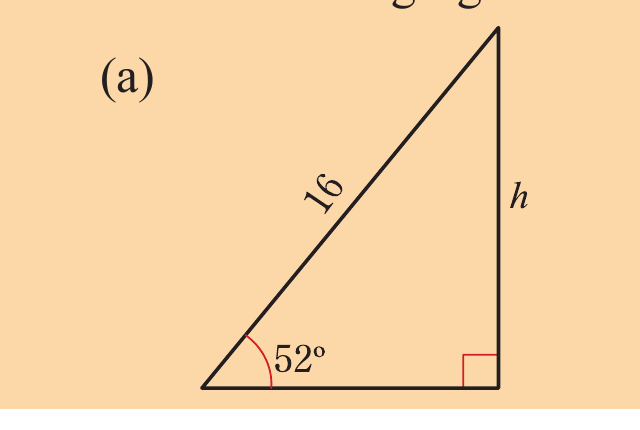
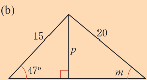
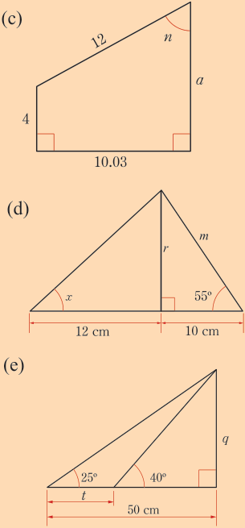
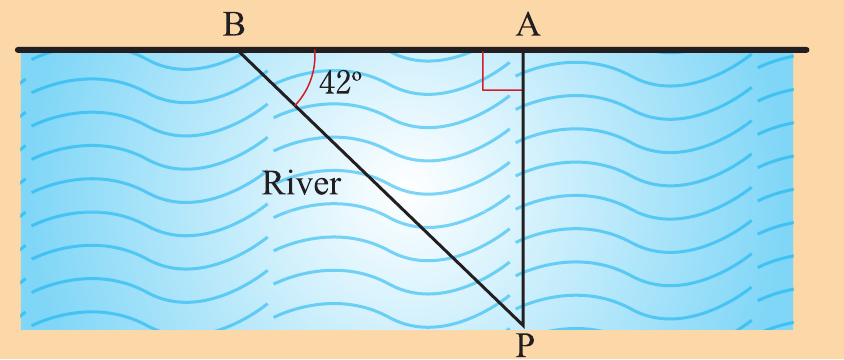

Trigonometry
When the angle of elevation of the sun is 30°, the shadow of a post is 6 m longer than when it is 60°.
Find the height of a post.
The angle of elevation of the top of a church tower from a point due East and 96 m away from its base is 30°.
From another point due West of the church tower the angle of elevation of the top is 60°.
Find the distance of the later point from the base of the church tower.
A point A is 289 m from point C on a bearing N32°W, point B is 450 m from point C on a bearing N58°E.
Find the distance from A to B.
When the angle of elevation of the sun is 55°, a tower casts a shadow 20 m long.
Find the height of the tower.
A kite is flying directly over a straight path 100 m long.
The angle of elevation of the kite from one end of the path is 35°, if the angle of elevation of the kite from the other end of the path is 55°, how high is the kite?
A boy finds that the angle of elevation of the top of a tree from a point on the ground is 25°.
He walks in a straight line 30 m closer to the foot of the tree.
The angle of elevation of the top is now 50°.
How high is the tree?
Find the values of the letters in each of the following figures.



An observer is at a point A on the bank of a river.
The foot of a coconut tree is at point P directly on the opposite bank.
A distance AB of 27 m is measured along the bank so that BÂP is a right angle and = 42°, as shown in the following figure.
